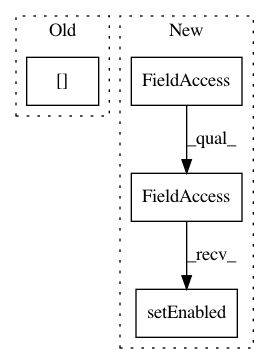

253f3d1cb2adfc35c47417971b134d732a04dc36,applets/pixelClassification/autocontextClassificationGui.py,AutocontextClassificationGui,handleLabelSelectionChange,#AutocontextClassificationGui#,210
Before Change
if self.pipeline.MaxLabelValue.ready():
enabled = True
enabled &= self.pipeline.MaxLabelValue.value >= 2
enabled &= numpy.prod(self.pipeline.CachedFeatureImages[self.imageIndex].meta.shape) > 0
self.labelingDrawerUi.savePredictionsButton.setEnabled(enabled)
self.labelingDrawerUi.checkInteractive.setEnabled(enabled)
After Change
self.labelingDrawerUi.savePredictionsButton.setEnabled(enabled)
self._viewerControlUi.liveUpdateButton.setEnabled(enabled)
self._viewerControlUi.pauseUpdateButton.setEnabled(enabled)
self._viewerControlUi.checkShowPredictions.setEnabled(enabled)
self._viewerControlUi.checkShowSegmentation.setEnabled(enabled)
@pyqtSlot()
In pattern: SUPERPATTERN
Frequency: 3
Non-data size: 4
Instances
Project Name: ilastik/ilastik
Commit Name: 253f3d1cb2adfc35c47417971b134d732a04dc36
Time: 2013-01-04
Author: bergs@janelia.hhmi.org
File Name: applets/pixelClassification/autocontextClassificationGui.py
Class Name: AutocontextClassificationGui
Method Name: handleLabelSelectionChange
Project Name: ilastik/ilastik
Commit Name: 2ac4cb942f2b7c00c70d4ba4d45252e85ef11ecf
Time: 2015-02-13
Author: buwen@stud.uni-heidelberg.de
File Name: ilastik/widgets/exportToKnimeDialog.py
Class Name: ExportToKnimeDialog
Method Name: __init__
Project Name: ilastik/ilastik
Commit Name: 253f3d1cb2adfc35c47417971b134d732a04dc36
Time: 2013-01-04
Author: bergs@janelia.hhmi.org
File Name: applets/pixelClassification/autocontextClassificationGui.py
Class Name: AutocontextClassificationGui
Method Name: toggleInteractive